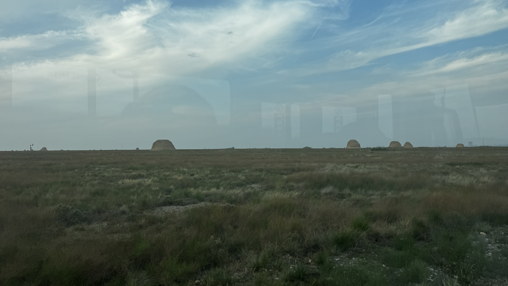
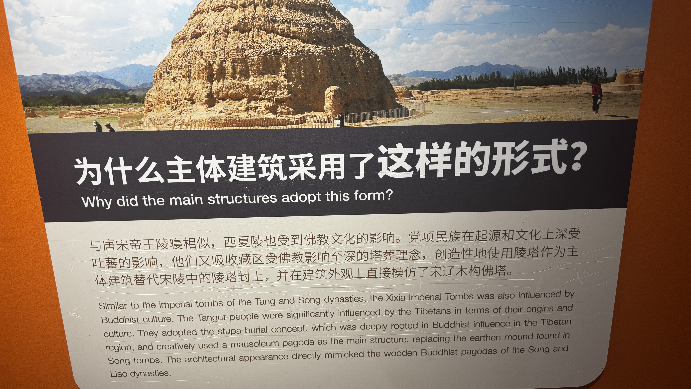
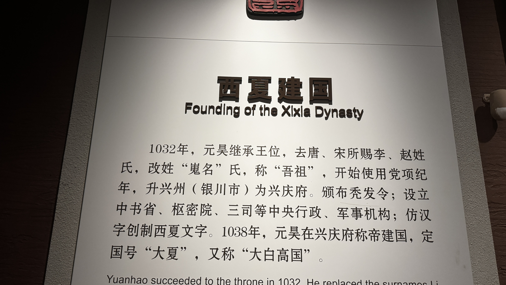
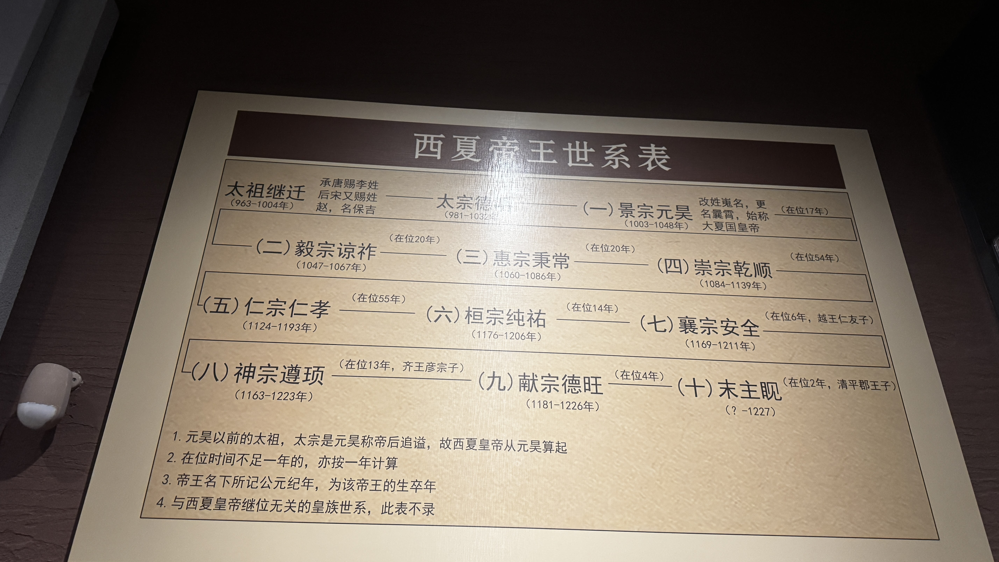
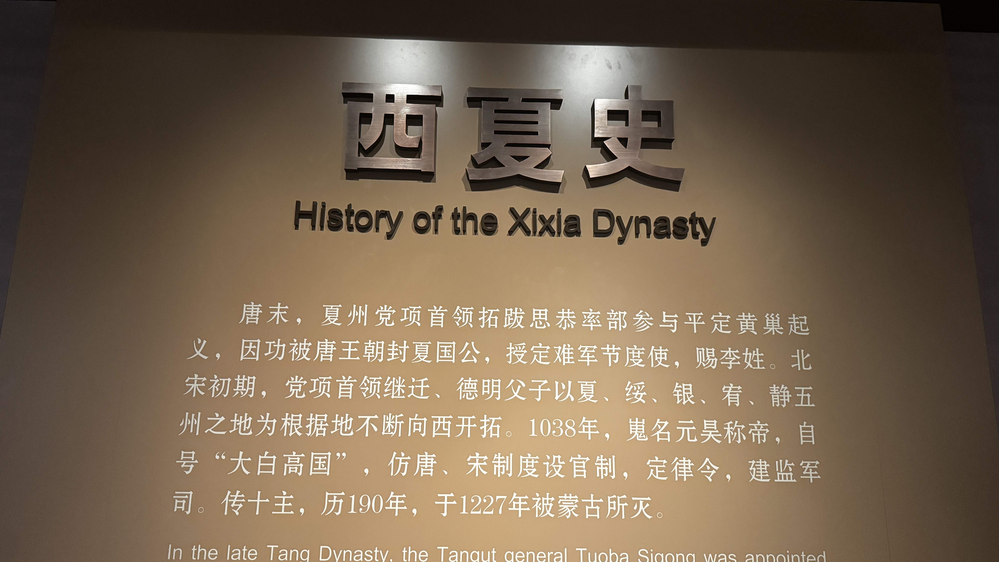

西夏陵博物馆展板：陵塔建筑形式解析
党项族，古代羌族的一支，原居青藏高原东北边缘。唐末，党项首领拓跋思恭因助唐镇压黄巢起义有功，被赐李姓，封夏国公，领有夏州（今陕西靖边）等地，史称"定难军节度使"。
1038年，党项首领嵬名元昊正式称帝，国号"大夏"，定都兴庆府（今宁夏银川），因其地处西部，史称"西夏"。西夏疆域"东尽黄河，西界玉门，南接萧关，北控大漠"，与宋、辽、金鼎立近两个世纪。
嵬名元昊称帝，国号"大夏"，定都兴庆府（今银川），西夏正式建国。
宋夏"庆历和议"，西夏向宋称臣，宋册封元昊为夏国主，开放边境贸易。
西夏与金朝划定边界，形成西夏、金、南宋三国鼎立局面。
蒙古成吉思汗三次征伐西夏，西夏被迫纳贡求和，国力渐衰。
蒙古灭西夏，末帝李睍投降被杀，西夏历经十帝，享国189年。

1038年，元昊称帝，建"大白高国"
西夏建国前夕，元昊命大臣野利仁荣创制西夏文字。西夏文仿汉字结构，共有6000余字，笔画繁复，结构匀称，是独立于汉字体系之外的自源文字。
西夏文在西夏境内广泛使用，用于书写法律、佛经、史书、医书等，形成了独特的西夏文化体系。西夏灭亡后，西夏文逐渐成为死文字，直到20世纪初才被重新解读。
西夏统治者推崇儒学，设立太学，翻译儒家经典，实行科举制度，儒家思想成为西夏治国的重要理论基础。
西夏艺术融合汉、藏、回鹘等多种风格，壁画、雕塑、瓷器、金银器制作精美，具有独特的民族特色。
西夏控制河西走廊，是丝绸之路的重要通道，促进了东西方文化交流与贸易往来。

西夏帝王世系表：十帝传承，历时189年
西夏历代帝王都崇信佛教，将佛教定为国教。元昊建国后，广建佛寺，翻译佛经，西夏佛教迅速发展。
西夏陵区出土的佛教文物，包括鎏金铜佛像、彩绘泥塑、佛经残卷等，展示了西夏佛教艺术的高超水平。西夏陵的陵塔建筑，也融合了佛教塔刹的元素，体现了"以佛护陵"的思想。
西夏在敦煌莫高窟、安西榆林窟开凿和重修了大量洞窟，西夏壁画风格独特，色彩鲜艳，线条流畅。
西夏雕塑以泥塑和石刻为主，人物造型丰满，神态生动，体现了藏传佛教艺术的影响。
西夏绘画融合唐宋画风与藏族唐卡艺术，形成了独特的"西夏风格"，对后世影响深远。
西夏陵遗址：黄土夯筑的陵塔，历经千年风雨
西夏地处农牧交错带，经济以畜牧业为主，兼营农业。西夏的"滩羊"、"枸杞"闻名遐迩，与宋朝的边境贸易十分活跃。
西夏控制丝绸之路东段，商旅往来频繁，促进了商业繁荣。西夏的瓷器、金银器、纺织品制作精美，远销中亚和欧洲。
西夏拥有广阔的草原，畜牧业发达，马、牛、羊、骆驼数量众多，是西夏经济的支柱。
在宁夏平原和河西走廊，西夏兴修水利，发展灌溉农业，种植小麦、水稻、枸杞等作物。
西夏的制瓷、冶铁、纺织、印刷等手工业发达，灵武窑瓷器、西夏金器工艺精湛。
